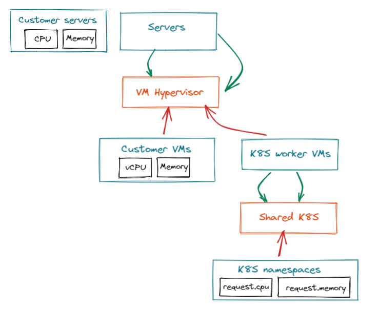

Quota
Billing groups
Billing groups are linked to users and allow Squest administrator to visualize who is consuming what. As an administrator you can create multiple billing group and place user in them. A user can belong to multiple billing group.

Note
Billing groups is an optional feature.
Quota
Quota can be used to:
- Track consumption of resources per billing group
- Create an auto approval request process by using them through global hooks and the squest API
Quota and attributes
A quota is a group of resource group attributes that you consider being of the same type.
Let's take an example. We do provide 3 services through the catalog:
- Bare metal server
- Virtual machines in a VMware hypervisor
- K8S namespaces in a shared K8S cluster
Each service create a resources in 3 different resource group of the resource tracking.
The simplified graph view of resource group would be the following: 
Note
All attributes are not represented. For a complete example of resource group and resource pool attribute link refer to the resource tracking doc
No matter what service will be provisioned from the service catalog, we want to track for example our global consumption of CPU. The global CPU is actually linkable to:
- the
CPUattribute of the "Customer servers" resource group - the
vCPUattribute of the "Customer VMs" resource group - the
request.cpuattribute of the "K8S namespaces" resource group
So we would create a quota named "CPU" and link it to all resource group attribute definition

Link quota to billing groups
Once quota are defined, you can link them to each billing group and set a limit. Squest will then calculate the consumption by retrieving each instance that are linked to tracked resource attributes.
Note
The limit does not block any request from the service catalog. This field is used to give the administrator information about consumptions. The total consumption can exceed limit if the administrator provision services anyway.
Consumed quota and limits are exposed as Prometheus metrics. You can then create your own Grafana dashboard from them to visualize percentage consumption of each attribute per billing group.